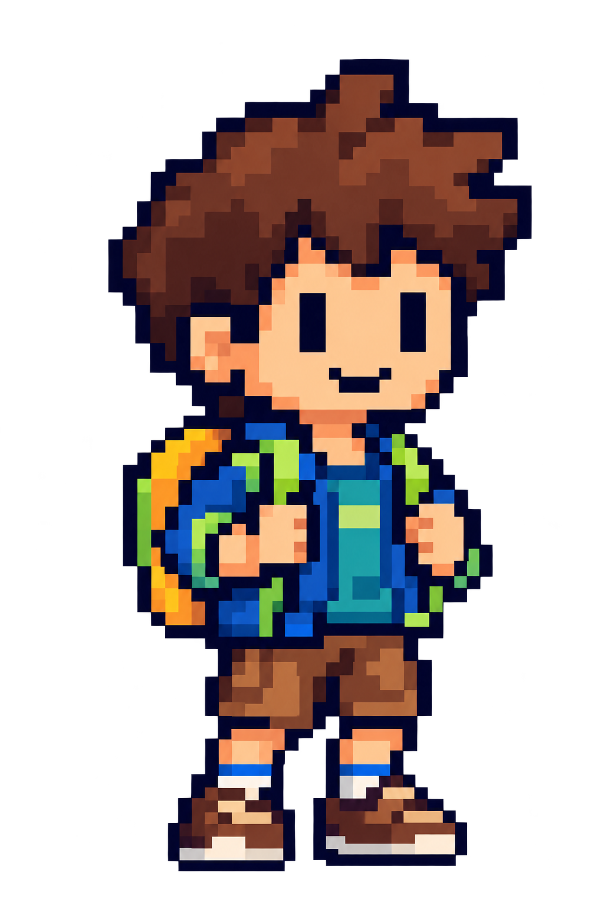
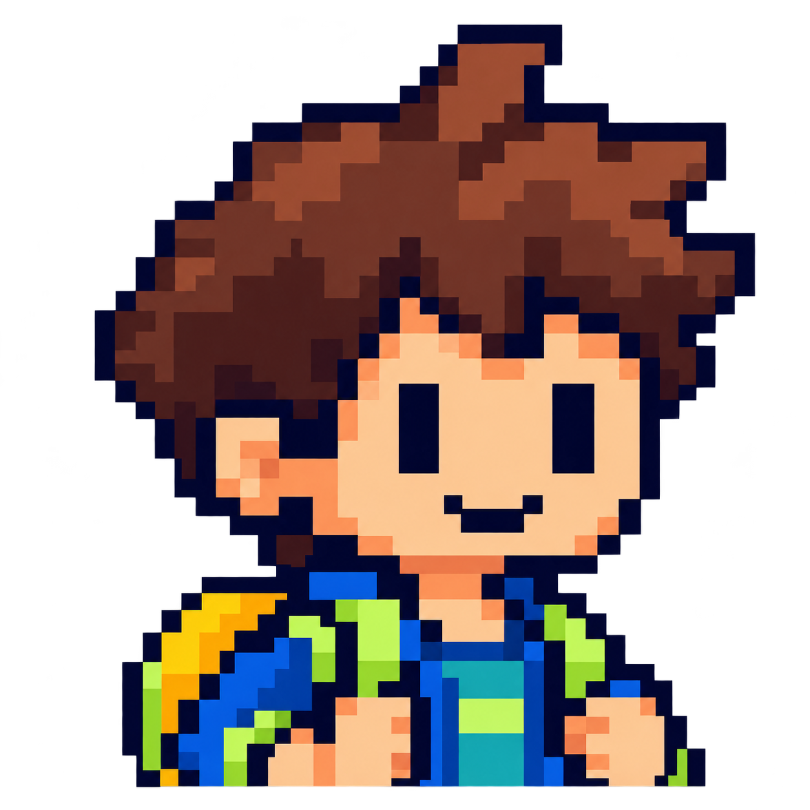
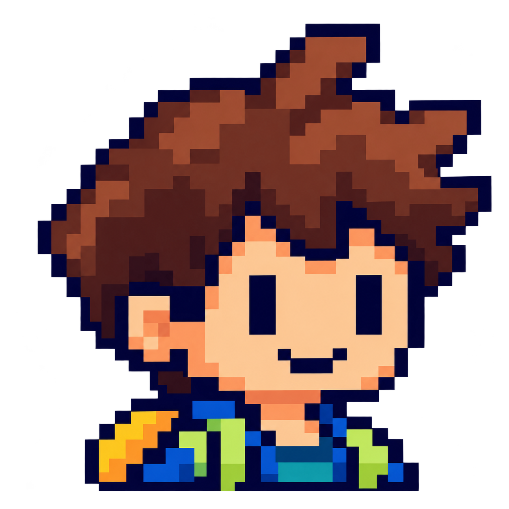

1. Corpo inteiro
Saudação e página de foco. Cabelo castanho, mochila e roupa azul/verde.

Simulação de tamanho de uso — altura
72 px
88 px
100 px
Corpo inteiro, retrato de navegação e avatar de ranking derivados da mesma identidade. Referência: estudante aventureiro da UX original. Estes arquivos estão isolados da aplicação.
Saudação e página de foco. Cabelo castanho, mochila e roupa azul/verde.

Retrato de cabeça e ombros, preservando rosto, cabelo e alças da mochila.

Avatar dedicado ao tamanho pequeno, com detalhes simplificados da mesma identidade.
